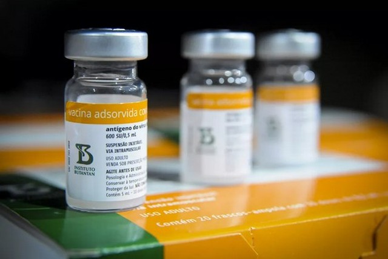
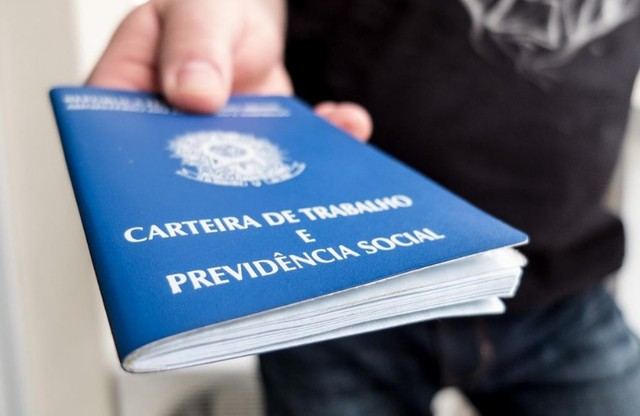

Presidente defende voto impresso nas eleições de 2022 durante live
Eleições 2022
O presidente Jair Bolsonaro voltou na última quinta feira a defender a utilização do voto impresso nas eleições durante a realização de live semanal. Durante a transmissão realizada pelas redes sociais, foram apresentados vídeos de eleitores que foram às urnas em eleições anteriores apontando supostos indícios de fraudes na utilização da urna eletrônica.
Bolsonaro desafiou aqueles que cobram que ele apresente provas de que há fraude na urna eletrônica a mostrarem que o sistema não pode ser fraudado.“Será que se fazer eleições é seguro, é blindado? Os que me acusam de não apresentar provas, eu devolvo a acusação. Me apresente provas [de que a urna eletrônica] não é fraudável”.O presidente também disse que defende a realização das eleições.

Ministério cita falta de registro e baixa efetividade em idosos para não usar a CoronaVac em 2022
Covid
O Ministério da Saúde informou à Comissão Parlamentar de Inquérito (CPI) da Covid-19 que tem a previsão de deixar de usar o imunizante CoronaVac na vacinação em 2022 por dois fatores: primeiro, o status de aprovação emergencial que a vacina ainda mantém na Agência Nacional de Vigilância Sanitária (Anvisa), e a segunda justificativa seria a "baixa efetividade entre idosos acima de 80 anos".

Servidores do Legislativo e Judiciário são os que terão que contribuir com os maiores valores para a Previdência
Reforma da Previdência
Com os salários mais altos da esfera pública, os servidores dos poderes Legislativo e Judiciário são os que terão que contribuir com os maiores valores para a nova Previdência. A reforma, promulgada pelo Congresso nesta terça-feira (12), determinou o aumento da alíquota de contribuição, que poderá chegar a 22% sobre a parcela que exceder o teto de R$ 39 mil de salário.
Manifestantes picham Ministério da Economia em protesto
Brasília
O prédio do Ministério da Economia recebe uma série de protestos contra o ministro Paulo Guedes nesta quinta-feira (7). As manifestações começaram pela manhã, com uma enxurrada de notas falsas de dólar jogadas no local. Nesta tarde, o edifício chegou a ser pichado com os dizeres “Guedes no paraíso e o povo no inferno" e "Guedes lucra com a fome”. Confira o Vídeo.